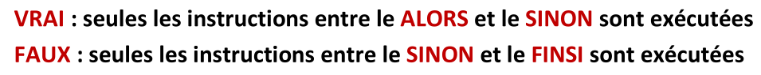
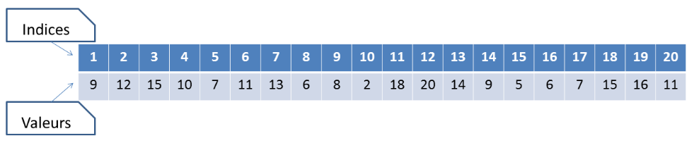
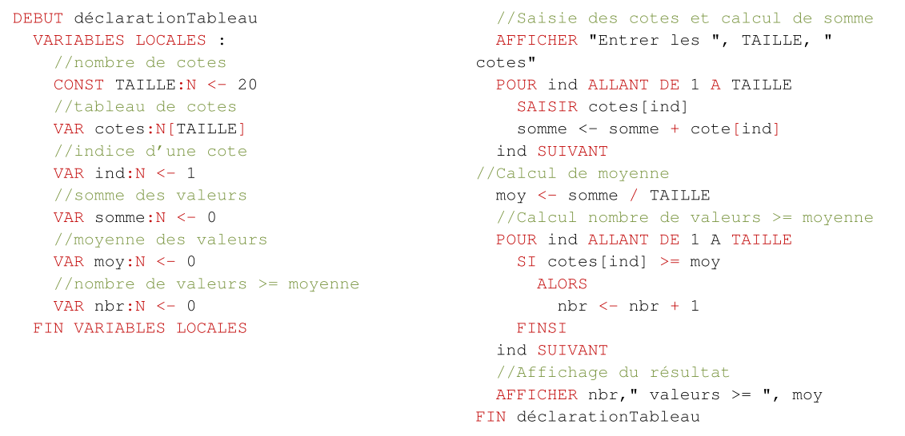

Logique de programmation
Created: 2020-05-11 lun 12:05
1 ALGORITHMIQUE ET PROGRAMMATION
1.1 ALGORITHMIQUE
ALGORITHMIQUE
Science des algorithmes.
ALGORITHME
Suite ordonnée d'instructions qui indique la démarche à suivre pour résoudre une série de problèmes équivalents.
Un algorithme ne doit contenir que des instructions compréhensibles par celui qui devra l'exécuter.
On exécute des algorithmes (presque) tous les jours !

Exemple
Extrait d’un dialogue entre un touriste égaré et un autochtone :
« Pourriez-vous m’indiquer le chemin de la gare, s’il vous plait ? »
« Oui bien sûr : vous allez tout droit jusqu’au prochain carrefour, vous prenez à gauche au carrefour et ensuite la troisième à droite, et vous verrez la gare juste en face de vous. »
« Merci. »
La réponse de l’autochtone est la description d’une suite ordonnée d’instructions : « allez tout droit, prenez à gauche, prenez la troisième à droite ».
Celles-ci manipulent des données : « carrefour, rues »
Et permettent de réaliser la tâche désirée : « aller à la gare. »
Elles sont compréhensibles par des humains.
Critères de qualité
VALIDITE
ROBUSTESSE
REUTILISABILITE
COMPLEXITE
EFFICACITE
MAINTENABILITE
ELEGANCE
Validité
La validité d’un algorithme est son aptitude à réaliser exactement la tâche pour laquelle il a été conçu.
Arrive-t-on effectivement à la gare en exécutant scrupuleusement les instructions dans l’ordre anoncé ?
Robustesse
La robustesse d’un algorithme est son aptitude à se protéger de conditions anormales d’utilisation.
Le chemin proposé a été pensé pour un piéton, alors qu’il est possible que le « touriste égaré » soit en voiture et que la « troisième à droite » soit en sens interdit.
Réutilisabilité
La réutilisabilité d’un algorithme est son aptitude à être réutilisé pour résoudre des tâches équivalentes à celle pour laquelle il a été conçu.
L’algorithme de recherche du chemin de la gare est-il réutilisable tel quel pour se rendre à la mairie?
A priori non, sauf si la mairie est juste à côté de la gare.
Complexité
La complexité d’un algorithme est le nombre d’instructions élémentaires à exécuter pour réaliser la tâche pour laquelle il a été conçu.
Si le « touriste égaré » est un piéton, la complexité de l’algorithme de recherche de chemin peut se compter en nombre de pas pour arriver à la gare.
Efficacité
L’efficacité d’un algorithme est son aptitude à utiliser de manière optimale les ressources du matériel qui l’exécute.
N’existerait-il pas un raccourci piétonnier pour arriver plus vite à la gare ?
Maintenabilité
Capacité d'un algorithme à être mis à jour, amélioré, modifié facilement.
Elegance
- KISS
- Keep It Simple, Stupid.
- DRY
- Don't Repeat Yourself
La perfection est atteinte, non pas lorsqu'il n'y a plus rien à ajouter, mais lorsqu'il n'y a plus rien à retirer.
1.2 PROGRAMMATION
La programmation d’un ordinateur consiste à lui « expliquer » en détail ce qu’il doit faire, en sachant :
- qu’il ne « comprend » pas le langage humain,
- qu’il peut seulement effectuer un traitement automatique sur des séquences de 0 et de 1
Langage de programmation
Un langage de programmation est composé d’un ensemble de mots-clés (choisis arbitrairement),
de règles très précises indiquant comment on peut assembler ces mots pour former des «
phrases » et de procédures de traduction des phrases en séquence de 0 et de 1.
Ils permettent de faire abstraction des mécanismes bas niveaux de la machine.
Ils facilitent la rédaction et la compréhension d’un code source par un humain.
Traduction
La traduction des textes écrits dans un langage de programmation en instructions machines est réalisée soit par des interprètes, soit par des compilateurs.
INTERPRETE
Les interprètes traduisent et exécutent les instructions les unes après les autres.
COMPILATEUR
Les compilateurs traduisent toutes les instructions du programme en langage machine et sauvegardent cet état dans un fichier exécutable (dit "binaire"). L'ordinateur exécute le code machine sans utiliser le code source, ce qui permet de gagner du temps à l'exécution.
HYBRIDES
2 MACHINE LOGIQUE
Pour pouvoir apprendre à écrire des programmes, il est nécessaire de connaitre les caractéristiques et les compétences des machines avec lesquelles nous voulons communiquer. De façons à nous concentrer sur la logique des programmes, nous imaginons une machine logique ne reprenant que les éléments nécessaires à notre propos.

2.1 Début et fin de programme
Syntaxe

Représentation

Déroulement
Au lancement du programme la Machine Logique (ML) :
- Mémorise le nom du programme
- Charge le code dans la mémoire de code
- Recherche une instruction « Debut » suivie du nom du programme à exécuter
- Exécute l’instruction ayant le numéro suivant.
- Arrête le programme quand il exécute l’instruction « Fin » suivie du nom du programme mémorisé
2.2 Opérations et types de données
La manière de réaliser une opération sur des données dépend du type des données. Certaines opérations n'ont aucun sens sur certains types de données.
La technique pour filtrer de l'eau est très différente de la technique pour filtrer les entrées à une soirée
Tandis que filtrer des montagnes n'a pas de sens
Types et machine logique
Il en est de même pour la machine logique. Une opération sur des valeurs ne pourra être exécutée qu'en fonction du type de données de ces valeurs.
Il sera donc nécessaire de définir:
- Les types de données connues par la machine logique
- Les opérations possibles sur chaque type
- Les syntaxes reconnues par la machine pour exprimer ces types
2.3 Type de données numériques
Pour la ML une donnée numérique est équivalente à un nombre réel en algèbre.
Symbole identifiant du type : N
Règles d’écriture : identiques aux règles d’écriture des nombres décimaux en algèbre
12
456,7
0,005
Priorités des opérateurs

3 VARIABLES
3.1 Definitions
Constante littérale
Donnée écrite directement dans le code
Constante symbolique
Nom attribué à une valeur.
La valeur attribuée ne pourra pas être modifiée pendant l’exécution du programme
Variable
La variable associe également un nom à une valeur, mais la valeur pourra être modifiée lors de l’exécution du programme.
La valeur des variables est enregistrée dans la pile.
Assignation
Opération d’attribution d’une valeur à une variable.
3.2 Déclaration
Syntaxe
Bloc de déclaration:

Déclaration de constante

Déclaration de variable

Exemple

Représentation

3.3 Instruction d’assignation
Une instruction d’assignation provoque la modification de la valeur d’une variable.
La valeur assignée à une variable doit être de même type que la variable.
Attention : la valeur se trouvant dans la variable avant l’assignation est définitivement perdue à la fin de l’instruction
Syntaxe :

Déroulement
Lors de l’assignation d’une expression dans une variable:
- L’expression est évaluée
- Le résultat de l’évaluation est assignée à la variable
Représentation

3.4 Evaluation des Expressions
Lorsqu’une instruction contient une expression, la ML commence par évaluer l’expression avant d’effectuer l’instruction
Déroulement

- Chaque variable est remplacée par sa valeur actuelle
- X par 15
- Y par 12
- Z par -1
- X par 15
- Chaque opération est effectuée puis remplacée
- 5 * 15 par 75
- 2 * 12 par 24
- 24 * -1 par -24
- 75 - -24 par 99
- 99 mod 15 par 9
3.5 Table d'évolution
Les tables de valeurs reprennent l’état de la mémoire à la fin de chaque instruction
| Programme | N° ligne | variable a | variable b |
|---|---|---|---|
| . Debut ex1 | 1 | / | / |
| . variables locales | 2 | / | / |
| . var a :N <- 1 | 3 | 1 | / |
| . var b :N <- 2 | 4 | 1 | 2 |
| . fin variables locales | 5 | 1 | 2 |
| . a <- a + b | 6 | 3 | 2 |
| . b <- b + a | 7 | 3 | 5 |
| . a <- b - a | 8 | 2 | 5 |
| . b <- b + a | 9 | 2 | 7 |
| . a <- a + b | 10 | 9 | 7 |
| . a <- a – a | 11 | 0 | 7 |
| . Fin ex1 | 12 | 0 | 7 |
4 AFFICHAGE ET SAISIE
4.1 Afficher
L’instruction « afficher » provoque l’affichage d’une liste de valeur à l’écran.
Syntaxe

Deroulement
- La ML calcule le résultat de chaque expression et affiche les résultats les uns à la suite des autres.
- Si une expression commence et se termine par le caractère guillemet (") le texte entre les guillemets est affiché tel quel à l’écran.
Représentation
- Affichage de la première valeur « la division entière de »
- Remplacement de a par 7
- Affichage de la deuxième valeur « 7 »
- Affichage de la troisième valeur « par »
- Remplacement de b par 3
- Affichage de la quatrième valeur « 3 »
- Remplacement de a par 7
- Remplacement de b par 3
- Remplacement de « 7 DIV 3 » par 2
- Affichage de la cinquième valeur « 2 »
Si au moment de l'exécution de l'instruction a=7 et b=3, la ligne affichée à l'écran sera: la division entière de 7 par 3 est 2
4.2 Saisir
L'instruction "saisir" provoque : l'interruption de l'exécution du programme dans l'attente d'une valeur communiquée par l'utilisateur et la réception et la mise en mémoire de la valeur reçue
Syntaxe :
Remarques :
- Le type de la valeur saisie est celui de la variable
- La machine logique n'accepte que des valeurs de ce type
- Quand la machine logique reçoit une valeur du bon type, elle modifie la valeur de la variable dans la mémoire de données
Représentation

Affichage et la lecture dans une table de valeurs
5 TYPE DE DONNÉES BOOLÉENNES
5.1 Valeurs booléennes
Symbole identifiant du type : B
Règles d’écriture : VRAI ou FAUX
5.2 Opérateurs booléens
La négation (NON)
L'opérateur de négation donne un résultat inverse à la valeur de son opérande
Table de vérité :

La conjonction (ET)
Le résultat d'une conjonction n’est VRAI que si ses deux opérandes sont VRAI
Table de vérité :

La disjonction (OU)
Le résultat d'une conjonction est VRAI si au moins un de ses deux opérandes est VRAI
Table de vérité :

Les opérateurs de comparaison
Les opérateurs de comparaison ont comme résultat une valeur booléenne.
Les deux opérandes d'une comparaison doivent être de même type et la comparaison doit être implémentée par le type de données.
Remarque : pour chaque nouveau type, il faudra définir quels opérateurs de comparaison sont définis.
Les comparateurs d'égalité (=) et de différence(≠) sont définis pour :
- les valeurs de type numérique
- les valeurs de type booléen
Les comparateurs d'ordre (<, ≤, >, ≥) sont définis pour :
- les valeurs de type numérique.
Priorité des opérateurs

5.3 Expression booléenne
Une expression booléenne est une expression dont le résultat est une valeur booléenne
Exemple d’évaluation d'une expression booléenne.
( 45 / 5 ≥ 6 + 4 ) ou non ( 3 * 4 = 7 ) et ( VRAI ou ( 5 ≠ 5 ))

5.4 Syntaxe
Déclaration variable booléenne

Constante booléenne

Assignation variable booléenne

Expression booléenne

Opération de comparaison

Opérateur d’égalité

Comparateur d’ordre

5.5 Exemple

5.6 Table de vérité
| X | Y | X et Y | non (X et Y) |
|---|---|---|---|
| 0 | 0 | 0 | 1 |
| 0 | 1 | 0 | 1 |
| 1 | 0 | 0 | 1 |
| 1 | 1 | 1 | 0 |
6 STRUCTURES DE CONTRÔLE: ALTERNATIVE
6.1 Alternative simple
La structure alternative permet d’effectuer une suite d'instructions si une condition est remplie et d'en effectuer une autre si celle-ci ne l'est pas.
L'exécution de l'alternative commence par l'évaluation de la condition (vraie ou fausse) suivie de l'exécution de la suite d'instructions associées à la réponse obtenue.
Syntaxe

Lorsque le résultat de l'évaluation de l'expression booléenne est :

Représentation
Table des valeurs
Variante
Lorsque aucune instruction n'est à exécuter quand le test est faux, on n'indiquera pas le sinon.
Variante : Syntaxe
Variante : Représentation
6.2 Alternatives simples imbriquées
Ordinogramme
Pseudo-code
6.3 Alternative composée
La structure alternative composée permet d’effectuer une suite d'instructions en fonction de la valeur d'une variable. L'exécution de l'alternative composée commence par une recherche du bloc d'instructions liées à la valeur de la variable et se poursuit en exécutant les instructions de ce bloc.
Syntaxe
Seules les instructions se trouvant dans le cas qui a la même valeur que l'expression numérique seront exécutées.
Si aucun cas n'a la valeur de l'expression, ce sont les instructions de "AUTRE CAS" qui sont exécutées.
Représentation
7 STRUCTURES DE CONTRÔLE: BOUCLES
7.1 BOUCLE "TANT QUE"
La structure de boucle permet d'effectuer plusieurs fois une suite d'instructions.
Avec la boucle « Tant que » , la suite d'instructions sera répétée tant qu'une condition est
remplie.
Syntaxe
Déroulement
- Evaluation de la condition de boucle :
- si VRAI passer au point 2,
- si FAUX passer au point 3;
- Exécuter les instructions de la boucle puis revenir au point 1;
- Exécuter les instructions se trouvant après la boucle.
Points d'attention
- Pour que l'exécution puisse se terminer, il faut que la condition devienne fausse
- Il faut que les instructions de la boucle modifient les variables de la condition
Bonne pratiques
Pour rendre le code plus lisible et éviter les erreurs à ce niveau :
- Les instructions juste avant la condition initialisent les variables de la condition (même si elles le sont déjà par ailleurs)
- Les instructions modifiant ces variables dans la boucle se situent juste avant le "FIN TANT QUE"
Représentation
Exemple
Table des valeurs
7.2 BOUCLE "POUR"
Boucle "Pour" : une boucle "Tant que" particulière
Le nombre d’itérations de la boucle est fixe.
Il n’existe pas de cas où la boucle doit se terminer avant le nombre d’itérations.
Syntaxe
- a variable numérique entière
- b expression numérique entière
- c expression numérique entière
- d constante numérique entière
Remarques :
- La variable « a » et celles utilisées pour définir les valeurs « b » et « c » ne peuvent pas être modifiées pendant l’exécution de la boucle.
- La définition du pas est facultative. Si elle n’est pas définie « d » = 1
Déroulement
- Assigner de la valeur « b » à la variable « a »
- Evaluer si « a » est plus petit ou égal à « c »
- si vrai passer au point 3,
- si faux passer au point 6;
- Exécuter les instructions de la boucle
- Incrémenter « a » de la valeur de « d »
- Revenir au point 2;
- Exécuter les instructions se trouvant après la boucle.
Représentation
Variante : pas négatif
Exemple
Table des valeurs

7.3 BOUCLE "JUSQU'A CE QUE"
Avec la boucle « Jusqu’à ce que » :
- La suite d'instructions sera exécutée jusqu’à ce que la condition soit VRAI
- La suite d'instructions contenue sera exécutée au moins 1 fois dans tous les cas.
Syntaxe

Représentation
7.4 Choisir le type de boucle
- Si le nombre d’itérations de la boucle est calculable avant le début des itérations :
- Boucle « Pour »
- Sinon si le nombre d’itérations est toujours au minimum 1:
- Boucle « Jusqu’à ce que »
- Sinon:
- Boucle « Tant que »
7.5 Transformation de boucle
8 TYPES DE DONNÉES CARACTÈRE ET TEXTE
8.1 Type Caractère
Dans le cadre de ce cours de logique, nous utiliserons une définition simple de la notion de caractère.
Nous nous limiterons aux lettres de l’alphabet latin + le caractère espace.
- Symbole identifiant du type : C
- Règles d’écriture : ‘a’, ‘b’
Opérateurs sur les caractères
Remarque:
Un caractère est plus petit qu’un autre s’il est avant dans l’ordre alphabétique.
8.2 Type Texte
Un Texte est une suite de caractères.
- Symbole identifiant du type : T
- Règles d’écriture : "mon texte"
Opérateur sur les textes
Exemple
Fonction de manipulation des textes
Concaténation
9 STRUCTURES DE DONNÉES : TABLEAUX
9.1 Problématique

1.Les entiers doivent être parcourus deux fois : a. Pour calculer la moyenne. b. Pour comparer chaque entier à cette moyenne.
2.Il faut enregistrer chaque entier a. Il faut 20 variables. b. Il n’est pas possible de faire une boucle qui répète la même opération sur des variables différentes.
9.2 Définition
Un tableau est un ensemble de variables
- de même type,
- désignées par un même nom,
- et distinguées les unes des autres par leur numéro (appelé aussi indice).

9.3 Déclaration
Les tableaux sont déclarés avec les autres variables.
Syntaxe

Remarques:
- La constante entre crochets détermine le nombre de cases du tableau.
- Les cases du tableau ne sont pas initialisées lors de la déclaration.
Exemple
Assignation et lecture des cases d’un tableau
Chaque case d’un tableau est une variable et peut donc être utilisée comme tel.
Les indices de cases peuvent être calculés.
Lors de la lecture ou de l’assignation d’une case si l’indice est hors des limites du tableau le programme est en erreur.
Problématique résolue

10 SOUS-PROGRAMMES: PROCÉDURES ET FONCTIONS
10.1 Définition
Un sous-programme est une séquence d’instructions qui peut être appelée par un
programme ou un sous-programme.
Il est intéressant d’isoler une séquence d’instructions dans un sous-programme:
- Lorsqu’une séquence d’instructions est répétée à plusieurs endroits d’un programme.
- Lorsqu’une séquence d’instructions est réutilisable dans d’autres programmes.
10.2 Structure d’un sous-programme
La définition d’un sous-programme commence par sa signature suivie de son corps et se termine
par un marque de fin de sous-programme.
La signature est composée du type (procédure / fonction), du nom, suivi de la définition des
paramètres
Les paramètres sont des variables initialisées par le programme appelant.
Leurs déclaration définissent leurs noms, le type de donnée et le type de passage de paramètre.
Le corps d’un sous-programme peut contenir tous les types d’instructions.
10.3 Exemple
Appel d'un sous-programme
Ordre d'exécution du code
- le programme tri s’exécute jusqu’au premier appel de inversion
- val1 et val2 sont initialisées avec les valeurs de A et B
- le sous-programme inversion s’exécute
- A et B reçoivent les valeurs de val1 et val2
- le programme tri s’exécute jusqu’au deuxième appel de inversion
- val1 et val2 sont initialisées avec les valeurs de B et C
- le sous-programme inversion s’exécute
- B et C reçoivent les valeurs de val1 et val2
- le programme tri s’exécute jusqu’au troisième appel de inversion
- val1 et val2 sont initialisées avec les valeurs de A et B
- le sous-programme inversion s’exécute
- A et B reçoivent les valeurs de val1 et val2
- Le programme tri se termine
Passage des paramètres
- In
- les variables sont initialisées par l’appel du sous-programme.
- Avant l’exécution du sous-programme chaque paramètre réel est copié dans son paramètre formel.
- Out
- la valeur des paramètres est retournée au programme appelant.
- Après l’exécution du sous-programme chaque paramètre formel est copié dans son paramètre réel.
Il est possible de combiner les actions:
- In (passage par valeur)
- Out (passage par résultat)
- In/Out (passage par variable ou par référence)
Remarques :
- si le paramètre est déclaré en « in » le paramètre réel peut être un littéral ou une expression.
- si le paramètre est déclaré en « out » ou « in/out » le paramètre réel doit être une variable.
Portée et durée vie des variables
- La portée d’une variable définit quel code à accès à la variable.
- La durée de vie d’une variable définit quand la variable est créée en mémoire et quand elle est détruite en mémoire.
- Une variable peut être « vivante » sans être accessible.
- Les variables locales et les paramètres d’un sous-programme:
- Ont une durée de vie du début de l’appel à la fin de l’appel du sous-programme.
- Ne sont accessibles que par le code du sous-programme.
Fonction et procédure
- Les fonctions sont des sous programmes qui retournent une valeur.
- Il faut préciser le type de valeur retournée à la fin de la signature.
- fonction aire(in long :N, in larg :N) :N
- La dernière instruction du code est « RETOURNE » suivie de la valeur à retourner au programme appelant.
- RETOURNE résultat
- L’appel d’une fonction est remplacé par sa valeur de retour dans l’expression du programme appelant.
Exemple